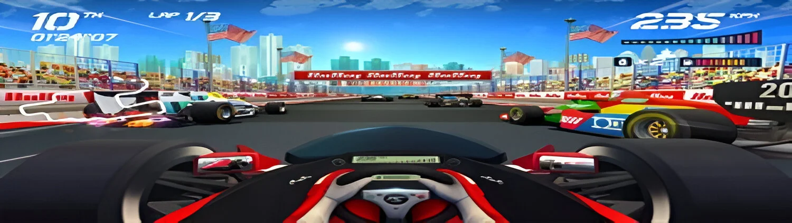
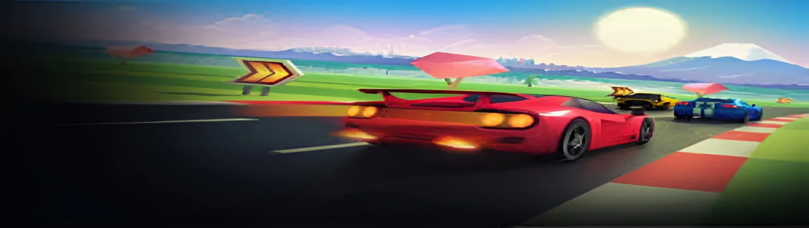

Horizon Chase Turbo
-

Cena de gameplay de Horizon Chase Turbo, com um carro em alta velocidade e paisagens tropicais ao fundo.
-
 Corrida de alta velocidade em Horizon Chase Turbo, com um carro esportivo e visual retrô dos anos 80 e 90.
Corrida de alta velocidade em Horizon Chase Turbo, com um carro esportivo e visual retrô dos anos 80 e 90. -

Corrida intensa em Horizon Chase Turbo, com carros competindo em uma pista vibrante e efeitos de néon.
Um jogo de corrida inspirado nos clássicos dos anos 80 e 90, com visuais vibrantes e jogabilidade arcade intensa.
Desenvolvido pelo estúdio brasileiro Aquiris. Inspirado em clássicos como Top Gear e Out Run, ele traz visuais vibrantes, jogabilidade veloz e trilha sonora empolgante, composta por Barry Leitch, o mesmo de Top Gear. Com modos multiplayer local e desafios intensos, Horizon Chase Turbo é uma homenagem moderna aos jogos de corrida retrô, perfeita para quem busca adrenalina e nostalgia na pista!